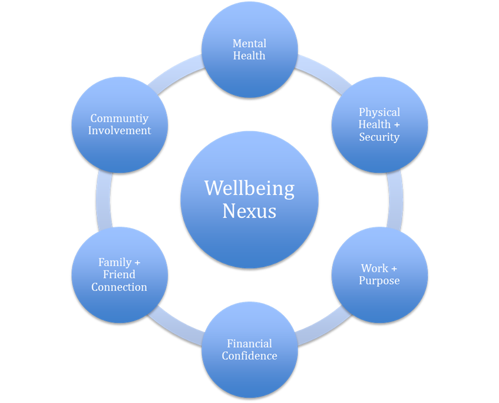
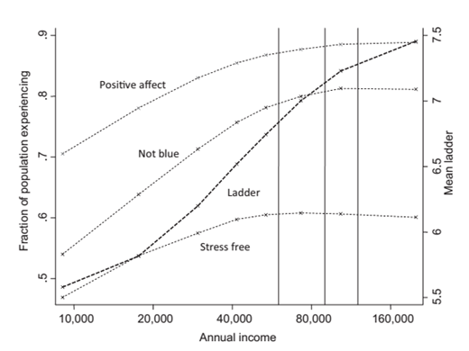
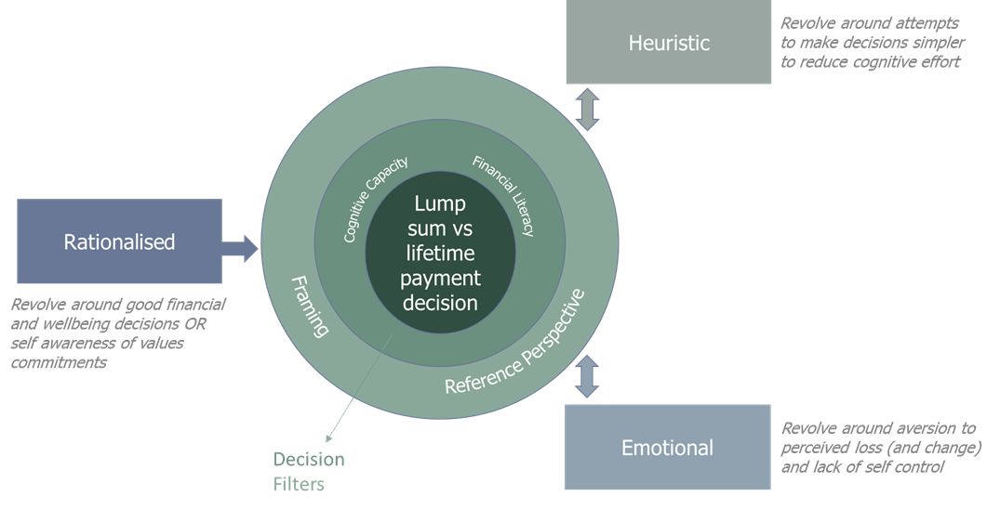

Human Decisions
Overview
The pension versus lump sum decision faced by members of defined benefits schemes is a complex one. Members are required to balance their short-term and long-term risks, goals and responsibilities all within a context of uncertainty.
As human beings we naturally employ various strategies to help with our financial decisions.
In this study we access credible secondary research in the fields of behavioural economics and psychology in order to apply a real-world behavioural lens to the pension versus lump sum decision. In the process we distil:
- The common strategies human beings employ to make sense of financial decisions within the context of complexity and uncertainty;
- That financial outcomes and wealth in themselves do not guarantee mental, emotional or physical wellbeing; and
- That authentic happiness and life satisfaction instead come from feeling in control, connected with community, and the ability to live with purpose in accordance with our values.
1.1 Good quality advice involves more than money
ASIC has identified that good quality advice refines and clarifies a client’s objectives, and helps the client, as much as possible, to achieve those objectives.
Consistent with this, advisers have an ethical responsibility to provide their services with diligence. According to the FASEA Code of Ethics, this requires that advisers exercise due care and skill in the way they understand each client; diagnose each client’s needs and issues; and ensure the strategy recommended is intended to improve the client’s financial wellbeing.
This requires an adviser to consider the drivers of financial wellbeing and broader aspects of wellbeing, which involves more than money.
1.2 Financial wellbeing is at the fulcrum of broader happiness
Australians worry about money regardless of their wealth. People who are financially stressed drink more, sleep less, and have more conflict in their personal relationships. This negatively impacts on their mental health. As their mental health deteriorates, they feel more financially stressed. Left unaddressed, it can become a vicious cycle.
Anxiety about our short-term financial commitments is at the core of financial stress. Well-paid professionals earning salaries are not immune to financial stress.
For example, Commonwealth public servants receive fortnightly salaries over the course of their careers. From this salary many are required to cover a mortgage, raise and educate their families and cope with unexpected life events. As they approach retirement, it is perfectly rational for retiring public servants to want some greater sense of freedom from the fortnightly cycle of ‘keeping up’.
In this way, the lump sum represents freedom to meet lump sum commitments during the active years of retirement.
1.3 Balancing short-term and long-term happiness
Ultimately human beings want to maximise their happiness, both now and in the future.
Hedonic happiness is achieved through pleasure and the absence of discomfort and is experienced ‘in the now’. Eudemonic happiness is achieved through satisfaction with life including perceptions of achievement, meaning, purpose and contentment. i.e. an assessment reflected on later.
Both are important to achieving wellbeing and life satisfaction.
We know that the role of an adviser is to enable the client to make financial decisions that help achieve their goals and improve their financial wellbeing. In practice, that means helping the client make decisions that enhance both short-term and long-term happiness.
1.4 Increased wealth does not necessarily lead to happiness
The correlation between wealth and subjective wellbeing is strong for the poor, but it reduces considerably for the mass affluent and flattens out for the HNW. While lack of money will bring misery, past a point there are diminishing returns in its capacity to buy happiness.
A ground-breaking study by Richard Easterlin first formulated in the 1970s, but revisited in 2014, showed that over a seven-decade period, the trend in United States happiness has been slightly negative despite real incomes more than tripling. Another landmark study by Deaton and Kahneman more recently demonstrated that while poverty will breed misery, money only buys happiness to a point. Past this point (typically lower ranks of the mass affluent) the improvements to wellbeing that greater income provides begin to diminish rapidly. Furthermore while the more affluent may prove to have greater overall life satisfaction, they may not necessarily be emotionally happy on a day to day basis. In fact relative expectations can engender even greater levels of financial stress among wealthier echelons of our society.
Clearly, there is more than money at play here and if advisers are to display diligence in their professional practices, they need to do more than just increase wealth in order to enhance financial wellbeing.
1.5 A sense of control is important
The sense of feeling in control in your retirement is both a great source of joy and conversely in its absence a potential source for stress and misery. Regardless of circumstances retirees will always be fundamentally happier when they feel in control and not plagued by uncertainties about the future.
Exchanging a non-indexed pension for a lump sum capital amount provides the investor with control. Control over how the money is invested, control over accessibility, control over how it is spent, whether on capital purchases like a holiday, new car or kitchen renovations.
In the absence of ready access to capital, clients will be reliant on saving from their pension payments. Not having ready access to money is a major cause of financial stress.
1.6 Quality connection and relationships fundamental
Relationships and quality connection, whether they be with partners, family, friends, and communities are fundamental to our wellbeing.
The most comprehensive study of happiness conducted by Harvard happiness for over 75 years has some very clear conclusions - good relationships keep us happy and healthy. It’s the quality of close relationships rather than the quantity. It often about coping too – those in good relationships report less impact on happiness when experiencing pain, sickness or loss. Those who are lonely amplify their physical pain with emotional pain.
In the active years of retirement, retirees typically share experiences with friends and family. Whether it be travelling around Australia towing a caravan with friends or taking the grandchildren to Disneyland, access to capital during retirement allows us to stay connected.
1.7 Humans have ways of coping with complex decisions
It is impossible for a pre-retiree to make an informed decision about their retirement. There’s just so much uncertainty and they have no experience with the lifestyle. Retirement is long, and we don’t know what challenges we will face along the way. As we age, we want to grow old with dignity, and have flexibility and options with the aged care and health systems.
But human beings have ways of coping with complex decisions when they don’t have all the information. We use mental shortcuts, or heuristics, to make decisions. When faced with choices along a continuum, we seek to avoid the extreme ends. For example, when faced with the choice of pension versus lump sum in a defined benefit scheme, we typically choose a combination. It’s also why most investors categorise themselves as balanced investors.
Anchoring or framing also plays an important part in decision making. The positioning of a decision matters. And therefore a super fund’s communication matters. Where defined benefit schemes communicate in their periodic members statements lump sum capital projections, members are more likely to prefer a lump sum. It makes sense, because any lump sum exchanged for a pension is perceived as a loss and retirees are more loss averse than younger investors.
Hyperbolic discounting plays a part as well. As human beings we have difficulty picturing ourselves in the future. We value benefits today more highly than a promise of future benefits.
1.8 Human beings lack discipline
Human beings have no innate sense of discipline. Any self-disciplined behaviour is learned from the environment. It’s why we have so many regrets when it comes to our finances. All of us haven’t done things that we intended to do and we have done things we had no intention of doing. It’s what author Carl Richards calls ‘the behaviour gap’.
We know that we should save our excess cashflow and allocate it to investments, but most of us either don’t or we do so in an inefficient manner. That’s why there is a real risk that if a retiree chooses a pension level above their day-to-day needs, that the excess will be unwittingly wasted and not contribute to the achievement of lifestyle objectives or financial wellbeing.
2. A DEEPER DIVE
2.1 The wellbeing nexus
Quality of life as measured by wellbeing is a multifaceted concept where the whole is greater than the sum of the parts. The critical building blocks complement or undermine each other in a holistic way. The close interrelationship between these factors means that an effective promotion of wellbeing needs to address all of these issues and not just one in isolation.
Financial wellbeing sits both at the crux of the reality we experience and our perceptions of our life experience. It’s important to consider that financial wellbeing has both objective and subjective aspects i.e. there is a relative experience of financial wellbeing that transcends absolute wealth. This is your financial confidence – security you can maintain what you have (keep enjoying what you now do), reach your goals in the future (achieve your ‘expected’ aspirations) and navigate uncertain future risks (peace of mind you don’t have to worry now). This can look quite different depending on your expectations in life and current circumstance reference point.

2.1.1 Negative impact of financial stress
The inexorable connection between mental and physical health has long been established.6 Stress and unhappiness can contribute to poor health and vice a versa, meaning that each cannot be effectively addressed without considering the other. Positive physical and mental health outcomes from these efforts also save governments billions of dollars in health care costs.2 4
The evidence suggests that better physical and mental health improve decision making particularly around financial matters. This leads to enhanced financial outcomes, facilitating financial security and independence. 12 13 14 15 16
Financial issues (49%) and family issues (45%) remain the leading causes of stress amongst Australians and this is no coincidence as one can beget the other.12 Other significant causes of stress notably include12:
- Personal health issues (42%)
- Issues with trying to maintain a healthy lifestyle (39%)
- Issues with the health of close ones (36%)
- Issues in the workplace (32%)
- Relationship issues (31%)
Furthermore lack of financial wellbeing is associated with low levels of engagement and reduced productivity at work. Coupled with physical and mental wellbeing, these factors account for the lion share of Australia’s estimated economic costs from absenteeism ($7 billion per year.1), presenteeism ($26 billion per year.2) and turnover. Not to mention the extreme public economic burden that inevitably results from poor financial, mental and physical wellbeing among the population.
2.1.2 The experience of financial stress
Financial stress is not just poverty - it’s also about ‘missing out’ on quality of life. The long established and Government cited ABS framework for financial stress indicators is broken up into two categories: ‘Financial stress experiences’ and ‘Missing out experiences’. This framework is primarily objective in nature rather than subjective but it notably integrates implied ‘quality of life needs’ that go beyond basic financial security measures. The Financial Stress Experiences component covers the basic needs such as;
- Ability to raise $2000 in a week for something important
- Spending more money than received, having to borrow money or seek assistance
- Went without meals or unable to heat home
- Could not afford holiday for at least one week a year
- Could not afford a night out once a fortnight
- Could not afford friends or family over for a meal once a month
- Could not afford special meal once a week
- Could only afford second hand clothes most of the time
- Could not afford leisure or hobby activities
2.1.3 Financial stress and wellbeing can be independent of absolute wealth
It has long been found that within a country at a given time those with higher incomes do tend to be happier. However, this is largely driven by relative perceptions and expectations. Subjective assessments of wellbeing shift in accordance with the actual income of the society.
While a lack of money and confidence in your financial security is associated with poor wellbeing, the correlation between wealth and happiness only holds to a point. Past this there are diminishing returns for day to day emotional wellbeing although life satisfaction does improve.
There is no absolute sum of money that makes everyone feel financially secure and free of financial stress. Rather it depends on who you are comparing yourself to, the expectations you have, and how secure you feel in keeping what you have. Financial stress is subjective and largely about the way you see things relative to your expectations in life. It is moderated by a greater sense of control and certainty in the future. In fact it is not uncommon to see a dip in subjective wellbeing and increase in financial stress in relatively wealthier groups who don’t quite feel secure they have ‘made it’ yet. We often see affluent Australians feel less prepared for retirement than many in the mass market because they have much greater expectations of the retirement savings they will require.
The elasticity of wealth and wellbeing

(Deaton + Kahneman 2011)
2.1.4 Holistic wellbeing requires a balance of both short term and long term needs
Another critical phenomenon is the divergence between day to day happiness and overall life satisfaction. Day to day happiness is achieved through pleasure and the absence of discomfort and is experienced ‘in the now’. Satisfaction with life includes perceptions of achievement, meaning, purpose and contentment i.e. an assessment reflected on ‘then’. Both are important to holistic wellbeing but they can disconnect. You might pursue the things that make you happy day to day but neglect to take care of your future happiness or overall life satisfaction. You might be highly satisfied with your overall life achievements but yet not planned for the day to day life that you will be truly happy leading. On average, material progress has some tendency to help people get what they want in life, while relationships and engaging activities are more important for people’s emotional lives and holistic wellbeing.
The famous study by Kahneman and Deaton cited above analyzed more than 450,000 responses to the Gallup-Healthways Wellbeing Index (GHWBI), a daily survey that asks a battery of questions about wellbeing. It concluded that happiness is actually the result of the fulfilment of two abstract psychological states -- emotional wellbeing and life evaluation. Life evaluation requires a long view of a person's overall life. Though coloured by the day's emotions, it is based on a retrospective of their achievements. If they've accomplished the goals they've set, are financially secure, and are emotionally fulfilled, they're more likely to have a high evaluation of their life. Having goals that you can meet is essential to life satisfaction while setting goals that you're not going to meet sets you up for failure.
Emotional wellbeing reflects the emotional quality of an individual's everyday experience which is heavily influenced by social connection. In the words of Dr Kahneman “Emotional happiness is primarily social. The very best thing that can happen to people is to spend time with other people they like. That is when they are happiest… loneliness, regardless of how rich you are, is a very bad thing." A further point from his co-author Dr. Deaton argues “Not having enough money to live a decent life really gets in the way of doing the ordinary things that make people happy. What might create your emotional wellbeing is spending time with your friends, and if your income is below $75,000, you may not have the money to do it."
However, this does not mean the more affluent aren't stressed. The GHWBI data show that more educated and affluent individuals are often experience more stressed, with stress levels notably generally higher in wealthy countries. The data show that money doesn't alleviate stress in the same way it alleviates unhappiness. The financial pressures of maintaining our living standards and meeting our life achievement expectations keep us on our toes, not to mention having to keep up with the Joneses.
2.1.5 Known drivers of retirement success
As for wellbeing, there are multiple key interdependent elements for a successful retirement. Money becomes but a means to an end. It provides control and it reduces stress. We need to feel in control and be able to look forward to the future. We need to plan and live accordingly. Planning for expectation management, planning for connection, planning for purpose and meaning, and planning for the capability to retain control of our lives as best we can.
While objective life circumstances play critical roles, most key elements are more about how you feel than what you have or what has happened to you. These elements are interdependent and look different to everyone but still form the key pillars required for a truly happy and fulfilled retirement.
Wealth – We cannot escape the objective reality that wealth in retirement provides a greater sense of control and can secure a more comfortable good life. Financial wellbeing feeds into other elements such as health, relationships, self-identity and social opportunities. We need enough financial freedom to meet our wellbeing needs.
Wellbeing – Physical and psychological health are a key influence on our happiness in retirement. This includes the level of stress we experience, including lifestyle aspirations, finances and debt. Having appropriate health funding can also considerably reduce stress and encourage preventative health measures. However, health issues become somewhat inevitable the older we become so it’s not just about your experience of poor health but how well you cope with these challenges. Embracing the resiliency to face and cope with inevitable changes ahead in our lives as we get older makes us more likely to succeed in retirement.
Retirees who look forward to the future live longer and happier. There is also evidence that shows that retirees with this mindset are much less impacted by pain, disappointment and loss than their more pessimistic counterparts. Their perspective changes their experience and foster their ability to cope with inevitable changes.
Expectation alignment and acceptance – Happiness is often defined as reality minus expectations. So much of our experience of a good life depends on comparisons – with our social environment, with what we think we ‘deserve’ and with what we have come to expect. When expectations do not align with reality the acceptance process is much harder. However, many retirees, especially at the modest end of the wealth scale, are able (or forced) to post rationalise where they have landed and make the best out of their circumstances. It can be extremely painful to have to admit you are not happy with where your life has led to and that you are left wanting. This kind of cognitive dissonance adaption may mask the fact that many retirees have had to make more of a compromise to the quality of life than they would really like.
Control and certainty – The sense of feeling in control in your retirement is both a great source of joy and conversely in its absence a potential source for stress and misery. Regardless of circumstances retirees will always be fundamentally happier when they feel in control and not plagued by uncertainties about the future. They need the financial confidence to be able to enjoy their life today while still looking forward to be able to enjoy it tomorrow.
Connection – This is a central pillar for happiness, especially the day to day emotional experience of your life. Relationships and quality connection, whether they be with partners, family, friends, colleague, communities or even a higher power are fundamental to our wellbeing. You can have health, wealth and success, but few people rate their wellbeing highly without this. The most comprehensive study of happiness conducted by Harvard happiness for over 75 years has some very clear conclusions - good relationships keep us happy and healthy. It’s the quality of close relationships rather than the quantity. It often about coping too – those in good relationships report less impact on happiness when experiencing pain, sickness or loss. Those who are lonely amplify their physical pain with emotional pain.
Mental engagement – Many happy retirees report continued learning endeavours, hobbies, passions and engagement with work and the broader world that keeps them intellectually stimulated. This is a key symptom for retirement success but possibly the real take away here is the avoidance of boredom. It doesn’t really matter what engages you, just don’t get bored. Boredom will kill you. Many retirees report struggling with what to do with all the extra time on their hands post work and had not planned realistically for this.
Purpose, identity and legacy – As our motivational needs move up Maslow’s hierarchy beyond security, comfort and connection we find the need for maintaining our self-esteem. Our personal narrative needs purpose beyond just getting by and avoiding discomfort. Our inner story also craves continuity – a happy ending where we are in control and don’t lose what we already have. We want to maintain our self-identity despite the changes we face in societal and family roles as we get older – are we still needed and valued? We also tend to struggle with the concept of finality so we also find solace in the ‘legacy’ we leave behind – whether financial for family, enduring contribution to community or just how we hope our lives will be remembered by others. Those retirees who are able to fulfil these needs for meaning and come to peace with their final destination are much more likely to enjoy the last leg of the ride.
2.2 Making complex decisions under uncertainty
While we tend to assume our choice preferences will be rational to maximise utility, it has been well established that we don’t always make decisions with perfect information or rationality – particularly when they are complex and involve some future uncertainty. We acquire and process information using a limited number of intuitive heuristic rules that help us reduce the complexity of the ‘problems’ (i.e. the best choice to make) and the effort it takes to solve them. We ignore pieces of information or relegate their importance. These heuristics are essential decision-making tools and ‘less is more’ can often prove effective in some contexts.
Beyond ‘rule of thumb’ decision making strategies and other cognitive biases in the way we process information (e.g. availability, anchoring, mental accounting, probability/big number biases and hyperbolic discounting), there are also many emotional biases that can influence our decision-making processes. We all experience these to some degree and many revolve around our natural aversion to ‘losing what we have’ and avoiding uncertainty in the future (e.g. loss aversion, ambiguity aversion, status quo bias, endowment/disposition effects, and regret aversion). Others reflect our tendency to lack self-control or overestimate our own abilities.
In summary, we know that all humans consistently depart from rationality under conditions of uncertainty e.g. financial decisions about the future which involve risk and uncertainty. We don’t have perfect information (or the ability to process it all effectively) and we tend to fall back on heuristics (short cuts and rule of thumb in our ‘good enough’ assessments to reduce cognitive effort). We find our decision making heavily influenced by our emotional motivations, biases and need to maintain self-esteem.

2.2.1 Homo Heuristicus – The path of least resistance
Traditional conceptions of human decision making as perfectly rational (‘homo economicus’) have been replaced with more evidence based behavioural finance explanations that are more akin to ‘homo heuristicus’ i.e. using short cuts to make decisions with rules of thumb and discounting pieces of complicated information. At the heart of this is our strong desire to make complex decisions easier - without really having to do all the math and consider every single possible option available in detail.
Choice paradox – While greater range of choice implies the potential to make better decisions for the individual this does not always turn out to be the case. We are much more comfortable with bounded rationality in our decisions and paradoxically more choice does not leave us any happier or able to make the right choice of or ourselves. This is because option paralysis typically leads to avoidance behaviours. We are also typically less happy about decisions with many options because we build expectation of making the perfect choice which can leave us disappointed and post decision the perceived opportunity cost can erode our satisfaction. People want to feel good about the decisions they make and commit too - often even post rationalising their choices to reduce buyers regret.
This suggests that simply providing more product options and more information in itself does not in fact help make better choices.
One real world experiment amply demonstrates these principles. A large corporate employer in the USA sought to increase the voluntary pension saving participation of its employees by matching their contributions and offering a wide range of investment options. When the uptake was more disappointing than expected they tried a simple experiment - they varied the number of investment options offered to employees. They found that for each investment option they removed, uptake in the program significantly increased. They also found that more options led to a desire to simplify the decision, skewing choice to perceived ‘sure bets’ even though not always less risky. More choice did not lead to better outcomes - in fact demonstrably the opposite.
Naïve diversification heuristics and the 1/n success rule – Depending on how our choices are framed we tend to prefer to hedge our bets and choose the ‘middle’ rather than relatively ‘extreme’ option. Where a pension versus lump sum decision is presented along a continuum from 100% lump sum to 100 pension, we will hedge our bets and choose a combination; a middle ground.
Another reputable real world study was conducted on academics in the USA could choose allocation between two funds with varying risk as part of their pension plans. Most chose to allocate their contributions 50:50 between the two choices.
Hyperbolic discounting – This is an extremely pervasive influence on all out thinking which essentially sees more value assigned to immediacy of reward. In essence a dollar today is worth more than 2 dollars tomorrow. This means we tend to favour options that reward us sooner rather than later with obvious influences on our decision making around spending and saving. We value certainty more and what we can more easily imagine enjoying. In the context of the lump sum decision, the more immediate certain reward is considerably more appealing than a future one.
Probability and big number biases – In short most of us are pretty bad at math and prefer to avoid thinking about complex numbers. We really struggle with understanding probabilities so for all the aforementioned reasons above we avoid the option we perceive as more probabilistic e.g. the actuarial calculated advantages and risks of life time pension payments over a more straight forward lump sum proposition.
We also assess each dollar’s value differently depending on the scale of relative comparisons. We might be less likely to take additional effort to save $25 dollars on a $1500 item than a $50 item – we compare the trade-off relative to the decision at stake. This also means that when big dollar sums are involved the differences of otherwise significant dollar amounts between the choices may be given less weighting relative to other trade-offs than they otherwise would.
Wisdom of the default - Many individuals use a fairly reasonable heuristic to put their faith in the wisdom of the default. This is particularly evident within public sector, industry fund or employer schemes where there is some sense of paternal trust that the best (or at least all round good enough) option will be provided to them by default. This obviously contributes to the influence of option framing in lump sum versus lifetime payment trade-offs.
Mental accounting - Mental accounting occurs when sums of money are treated and valued differently depending on where they came from and/or where they are kept. People also have separate mental accounts for different categories of spending and are reluctant to transfer spending from one account to another (Thaler, 1999).
Personal mental accounting buckets and spending expectations that have been formed over time are very influential in how retirement income decision commitments are made and how options are valued. Individuals often feel a strong need to feel in control of these financial buckets and may play a part in typical preferences for lump sum access.
3. SUPPORTING REFERENCES
Financial Industry Regulatory References
ASIC REP 279 Shadow shopping study of retirement adviceASIC RG 175 Licensing: Financial product advisers – Conduct and disclosure
Financial-Planners-and-Advisers-Code-of-Ethics-2020. Retrieved https://www.fasea.gov.au/wp-content/uploads/2020/10/Financial-Planners-and-Advisers-Code-of-Ethics-2020-Guide.pdf
Wellbeing nexus
M. Zeidne, G. Matthews, R. Roberts 2012. The Emotional Intelligence, Health, and Well-Being Nexus: What Have We Learned and What Have We Missed? Applied Psychology: Health and Well-Being Volume 4, Issue 1, pages 1–30.Askell-Williams, H., Slee, P.T. and Van Deur, P.A. 2013 Social and emotional wellbeing programs: the nexus between sustainability and quality assurance. The Psychology of Education Review, 37(2), 48-56.
Report of the EEA Scientific Committee Seminar on Environment, Human Health and Well-Being Advancing the Knowledge Base Copenhagen 12 February 2014
Brülde, B., 2007, “Happiness theories of the good life,” Journal of Happiness Studies, 8(1): 15–49.
Chopik, W. J., & O’Brien, E. (2017). Happy you, healthy me? Having a happy partner is independently associated with better health in oneself. Health Psychology, 36, 21 – 30.
Christakis, N., J. Fowler, Simon, i. Schuster, P. D. Audio and L. Findaway World, 2009, Connected: The surprising power of our social networks and how they shape our lives, New York: Little, Brown and Co.
Fuochi, G., Veneziani, C. A., & Voci, A. (2018). Differences in the way to conceive happiness relate to different reactions to negative events. Journal of Individual Differences, 39, 27 – 38.
Sick at work: The Cost of Presenteeism to your Business and the Economy, July 2011
Workplace wellness in Australia – PriceWaterhouseCoopers & Medibank Private 2010
How employee health and wellbeing affects organisational productivity - Australian Public Service Commission 2014
Comcare Review – Australian Federal Government 2015
Seppala, E. Cameron, K. 2015. Proof That Positive Work Cultures are More Productive. Harvard Business December 2015
FD. Pot, EAP Koningsveld. 2009. Quality of working life and organizational performance - two sides of the same coin? Scandinavian Journal of Work, Environment & Health, Vol. 35, No. 6, pp. 421-428.
Economic Modelling of the Cost of Presenteeism in Australia. Econtech Pty Ltd for Medibank Private 2011, http://www.econtech.com.au/information/Social/Medibank_Presenteeism_FINAL.pdf
Financial Wellbeing- The Missing Piece in the Employee Wellbeing Picture. Paul Barrett The Work Foundation 2014
Carl Richards.2012 The Behavior Gap: Simple Ways to Stop Doing Dumb Things with Money
Negative impacts of financial stress
Stress & wellbeing: How Australians are coping with life. 2015 Australian Psychological Society. Accessible: https://psychology.org.au/getmedia/ae32e645-a4f0-4f7c-b3ce-dfd83237c281/stress-wellbeing-survey.pdf
Scott, E. 2016. Financial Stress - How It Affects You and What You Can Do About It. Health February 20, 2016. http://stress.about.com/od/financialstress/a/financialstress.htm
http://www.nhs.uk/conditions/stress-anxiety-depression/pages/coping-with-financial-worries.aspx
Stress in America paying with our health. American Psychological Association. February 2015
AC Worthington. 2006. Debt as a source of financial stress in Australian households. International Journal of Consumer Studies, 30(1), January 2006, 2-15.
Brackertz. B 2014. The Impact of Financial Counselling on Alleviating Financial Stress in Low Income Households: A National Australian Empirical Study. Social Policy and Society , Volume 13 , Issue 3, pp. 389 - 407
S Rowley, R Ong, M Haffner. 2015 Bridging the gap between housing stress and financial stress: The case of Australia- Housing Studies. Volume 30, 2015 - Issue 3, pp 473-490
M Siahpush, TTK Huang, A Sikora, M Tibbits. R.A. Shaikh, G.K. Singh. 2014. Prolonged financial stress predicts subsequent obesity: Results from a prospective study of an Australian national sample. Obesity. 22, 616–621.
G Jolley, L Newman, A Ziersch. F. Baum. 2011. Positive and negative impacts of job loss on family life: the perceptions of Australian car workers. Australian Journal of Social Issues Vol.46 No.4, 2011
JR Bray 2001 -- Hardship in Australia: an analysis of financial stress indicators in the 1998-99 Australian Bureau of Statistics Household Expenditure Survey. FaHCSIA Occasional Paper
Deprivation and financial stress indicators. 6503.0 - Household Expenditure Survey and Survey of Income and Housing, User Guide, Australia, 2015-16
Travers, P. and F. Robertson, November 1995-2017, Deprivation Standards Project, Flinders University of South Australia, Report prepared for the Department of Social Security. Accessible: https://www.abs.gov.au/ausstats/abs@.nsf/Lookup/by%20Subject/6503.0~2015-16~Main%20Features~Deprivation%20and%20financial%20stress%20indicators~12
HOUSEHOLD EXPENDITURE SURVEY AND SURVEY OF INCOME AND HOUSING: USER GUIDE, AUSTRALIA, 2009–10 (cat no. 6503.0) http://www.ausstats.abs.gov.au/Ausstats/subscriber.nsf/0/623543196F08E52CCA257A3900173F14/$File/65030_hes_sih_questionnaire.pdf (from page 280 onwards).
Diminishing returns to buying happiness
Easterlin, R. A., 1974, “Does Economic Growth Improve the Human Lot?” Nations and Households in Economic Growth: Essays in Honor of Moses Abramovitz, P. A. David and M. W. Reder (eds.), New York: Academic Press.Easterlin. Richard A. Will raising the incomes of all increase the happiness of all? –Journal of Economic Behavior and Organization Vol. 27 (1995) 35-47
Kahneman, D. and A. Deaton, 2010, “High income improves evaluation of life but not emotional well-being,” Proceedings of the National Academy of Sciences, 107(38): 16489–16493.
Brickman P, Coates D, Janoff-Bulman R. Lottery Winners and Accident Victims: Is Happiness Relative? Journal of Personality and Social Psychology 1978, Vol. 36, No. 8, 917-927
Diener, E., W. Ng, J. Harter and R. Arora, 2010, “Wealth and happiness across the world: Material prosperity predicts life evaluation, whereas psychosocial prosperity predicts positive feeling,” Journal of Personality and Social Psychology, 99(1): 52–61.
Diener, E. and M. Seligman, 2004, “Beyond Money: Toward an economy of well-being,” Psychological Science in the Public Interest, 5(1): 1–31.
Graham, C., 2009, Happiness around the world: The paradox of happy peasants and miserable millionaires, New York: Oxford University Press.
Hoffman, J., Gander, F., & Ruch, W. (2018). Exploring differences in well-being across occupation type and skill. Translational Issues in Psychological Science, 4, 290 – 303.
Jebb, A. T., L. Tay, E. Diener, and S. Oishi, 2018, “Happiness, Income Satiation and Turning Points around the World,” Nature Human Behaviour, 2(1): 33–38.
Luhmann, M., and S. Intelisano, 2018, “Hedonic Adaptation and the Set Point for Subjective Well-Being,” Handbook of Well-Being, E. Diener, S. Oishi, and L. Tay (eds.), Salt Lake City: DEF Publishers.
Piff, P. K., & Moskowitz, J. P. (2018). Wealth, poverty, and happiness: Social class is differentially associated with positive emotions. Emotion, 18, 902 – 905.
Weber, S., & Hagmayer, Y. (2018). Thinking about the Joneses? Decreasing rumination about social comparison increases well-being. European Journal of Health Psychology, 25, 83 – 95.
Balancing short and long term wellbeing needs
Alexandrova, A., 2005, “Subjective Well-Being and Kahneman’s ‘Objective Happiness’,” Journal of Happiness Studies, 6: 301–324.Argyle, M., 1999, “Causes and Correlates of Happiness,” Well-Being: The Foundations of Hedonic Psychology, D. Kahneman, E. Diener and N. Schwarz (eds.). New York: Russell Sage Foundation: 3–25.
Blanke, E. S., Riediger, M., & Brose, A. 2018. Pathways to happiness are multidirectional: Association between state mindfulness and everyday affective experience. Emotion, 18, 202 – 211.
Goldman, A. H., 2019, Life’s Values: Pleasure, Happiness, Well-Being, and Meaning, New York: Oxford University Press.
Fredrickson, B. L. and D. Kahneman, 1993, “Duration neglect in retrospective evaluations of affective episodes,” Journal of Personality and Social Psychology, 65(1): 45–55.
Kahneman, D., 1999, “Objective Happiness,” Well-Being: The Foundations of Hedonic Psychology, D.
Kahneman, D., E. Diener and N. Schwarz (eds.), 1999, Well-Being: The Foundations of Hedonic Psychology, New York: Russell Sage Foundation Press.
Kahneman, D. and A. Deaton, 2010, “High income improves evaluation of life but not emotional well-being,” Proceedings of the National Academy of Sciences, 107(38): 16489–16493.
Larsen, R. J. and Z. Prizmic, 2008, “Regulation of Emotional Well-Being: Overcoming the Hedonic Treadmill,” The Science of Subjective Well-Being, M. Eid and R. J. Larsen (eds.), New York: Guilford Press: 258–289.
Rodogno, R., 2015, “Prudential Value or Well-Being,” Handbook of Value, T. Brosch and D. Sander (eds.), New York: Oxford University Press, 287–312.
Tamir, M., Schwartz, S. H., Oishi, S., & Kim, M. Y. (2017). The secret to happiness: Feeling good or feeling right? Journal of Experimental Psychology: General, 146, 1448 – 1459.
Drivers of retirement success
Bateman, H, Chomik, R, Piggott, J (2016) Australia’s retirement incomes policy. In: O’Loughlin, K,Browning, C, Kendig, H (eds) Ageing in Australia: Challenges and Opportunities (forthcoming).
Armstrong, H. 2018. Connecting the dots. How to make the most of your later life career and retirement transitions. Lifelong Learning Systems Pty Ltd
Hurka, T., 2010, The Best Things in Life: A Guide to What Really Matters, New York: Oxford University Press.
Kaufman, M., Goetz, T., Lipnevich, A. A., & Pekrun, R. (2018). Do positive illusions of control foster happiness? Emotion, September 20, no pagination specified.
Layous, K. & Lyubomirsky, S. The How, Why, What, When and Who of Happiness: Mechanisms Underlying the Success of Positive Activity Interventions.
Liao, K Y-H, & Weng, C-Y. (2018). Gratefulness and subjective well-being: Social connectedness and presence of meaning as mediators. Journal of Counseling Psychology, 65, 383 – 393.
Lyubomirsky, S., L. King and E. Diener, 2005, “The Benefits of Frequent Positive Affect: Does Happiness Lead to Success?” Psychological Bulletin, 131(6): 803–855.
Lyubomirsky, S., K. M. Sheldon and D. Schkade, 2005, “Pursuing Happiness: The Architecture of Sustainable Change,” Review of General Psychology, 9(2): 111–131.
Lyubomirsky, S. & Layous, K. How Do Simple Positive Activities Increase Well-Being? – Current Directions in Psychological Science Volume: 22 issue: 1, page(s): 57-62
Martin, M. W., 2012, Happiness and the Good Life, New York: Oxford University Press.
Mitchell, P., 2018, “Adaptive Preferences, Adapted Preferences,” Mind, 127(508): 1003–25.
Hawkins, J., 2014a, “Well-Being, Time, and Dementia,” Ethics, 124(3): 507–542.
Tiberius, V., 2018, Well-Being As Value Fulfillment, New York: Oxford University Press, USA.
Kim, Hugh Hoikwang, Raimond Maurer, and Olivia S. Mitchell. (2016). “Time is Money: Rational Life Cycle Inertia and the Delegation of Investment Management.” Journal of Financial Economics. 121(2): 231-448.
M. Lindwall, A.I. Berg, P. Bjälkebring, S. Buratti, I. Hansson, L. Hassing, G. Henning, M. Kivi, S. König, V. Thorvaldsson, B. Johansson. 2017. Psychological Health in the Retirement Transition: Rationale and First Findings in the Health, Ageing and Retirement Transitions in Sweden (HEARTS) Study. Front. Psychol., 26 September 2017
S.M. Amorim L.H. de Freitas, 2019. Retirement Well-Being: A Systematic Review of the Literature. Trends Psychol. 27 (1)
Abel, B. J. , & Hayslip, B. (1987). Locus of control and retirement preparation. Journal of Gerontology, 42, 165-167.
Myrna. R, Pushkar. D. 1993. Gold Retirement, Personality, and Life Satisfaction: A Review and Two Models. Journal of Applied Gerontology. Volume: 12 issue: 2, page(s): 261-282
Kilty, K. M. , & Behling, J. H. (1986, October). Retirement financial planning among professional workers. Paper presented at the 39th Annual Scientific Meeting of the Gerontological Society of America, Chicago.
I. Hansson, S. Buratti, V. Thorvaldsson, B Johansson, A.I. Berg. Changes in Life Satisfaction in the Retirement Transition: Interaction Effects of Transition Type and Individual Resources. Work, Aging and Retirement, Volume 4, Issue 4, October 2018, Pages 352–366,
Blekesaune, M., Hansen, T. 2021. Human Values and Retirement Experiences: a Longitudinal Analysis of Norwegian Data. Soc Indic Res (2021). Aging & Mental Health. Volume 25, Issue 4.
Georg HenningORCID Icon,Andreas Stenling,Allison A.M. BielakORCID Icon,Pär Bjälkebring,Alan J. GowORCID Icon,Marie Kivi, 2011 Towards an active and happy retirement? Changes in leisure activity and depressive symptoms during the retirement transition. J Occup Health Psychol. 2011 Apr; 16(2): 230–246.
Kubicek, B. Korunka, C. 2011. Psychological Well-Being in Retirement: The Effects of Personal and Gendered Contextual Resources. J Occup Health Psychol. 2011 Apr; 16(2): 230–246.
Decisions under uncertainty
Gilovitch, T., D. Griffin and D. Kahneman (eds.), 2002, Heuristics and Biases: The Psychology of Intuitive Judgment, New York: Cambridge University Press.Kahneman, D. Gilovich, T. Griffin, D. (2002). Heuristics and Biases: The Psychology of Intuitive Judgment.
Kahneman, Daniel (2011). Thinking, Fast and Slow. Farrar, Straus and Giroux.
Kahneman, Daniel; Sibony, Olivier; Sunstein, Cass R. (2021). Noise: A Flaw in Human Judgment. William Collins.
Lusardi, A. Mitchell, O.S. 2011, “Financial literacy around the world: an overview.” Journal of Pension Economics and Finance, 10(4): 497 - 508
Millgram, E., 2000, “What’s the Use of Utility,” Philosophy and Public Affairs, 29(2): 113–136.
Pompian, M.M. 2006 Behavioral Finance and Wealth Management. How to Build Optimal Portfolios That Account for Investor Biases. Wilet New Jersey
Thaler, Richard H. 2015. Misbehaving: The Making of Behavioral Economics. New York: W. W. Norton & Company. ISBN 978-0-393-08094-0.
Swee-Hoon Chuah, James Devlin, (2011) Behavioural economics and financial services marketing: a review, International Journal of Bank Marketing, Vol. 29 Iss: 6 pp. 456 - 469
R. Linciano. 2010. Cognitive biases and instability of preferences in the portfolio choices of retail investors: Policy implications of behavioural finance. Consob, Divisione Studi Economici. Working Paper. 2010
Defined benefit/annuity decision making
Lusardi, Annamaria, Pierre-Carl Michaud, and Olivia S. Mitchell. (2017). “Optimal Financial Literacy and Wealth Inequality.” Journal of Political Economy. 125(2): 431-477.Brown, Jeffrey R., Arie Kapteyn, Erzo Luttmer, and Olivia S. Mitchell. (2017). “Cognitive Constraints on Valuing Annuities.” Journal of the European Economic Association. 15(2): 429-462.
Jeffrey R. Brown, Arie Kapteyn, Erzo F.P. Luttmer, Olivia S. Mitchell, and Anya Samek 2019 Behavioral Impediments to Valuing Annuities: Complexity and Choice Bracketing
Bütler, M, Teppa, F (2007) The choice between an annuity and a lump sum: Results from Swiss pension funds. Journal of Public Economics 91: 1944–1966.
Bateman, H, Eckert, C, Iskhakov, F, et al. (2015) Individual capability and effort in retirement benefit choice. UNSW Business School Research Paper no. 2015ACTL10. Available at: http://papers.ssrn.com/sol3/papers.cfm?abstract_id=2494036
Bateman, H, Louviere, JJ, Thorp, S (2014) Understanding how consumers make financial choices: A cross-disciplinary learning experience. In: Harrison, T, Estelami, H (eds) The Routledge Companion to Financial Services Marketing. London: Routledge, pp. 62–77.
Benartzi, S, Previtero, A, Thaler, RH (2011) Annuitization puzzles. The Journal of Economic Perspectives 25: 143–164.
Bernheim, BD (1991) How strong are bequest motives? Evidence based on estimates of the demand for life insurance and annuities. Journal of Political Economy 99: 899–926.
Beshears, J, Choi, JJ, Laibson, D. (2008) How are preferences revealed? Journal of Public Economics 92: 1787–1794.
Beshears, John, Choi, James J., Laibson, David, Madrian, Brigitte C., Zeldes, Stephen P. “What makes annuitization more appealing?.” Journal of public economics 116 (2014): 2–16.
Brown, JR (2008) Understanding the role of annuities in retirement planning. In: Lusardi, A (ed) Overcoming the Savings Slump: How to Increase the Effectiveness of Financial Education and Savings Programs. Chicago, IL: University of Chicago Press, pp. 178–206.
Brown, JR, Kapteyn, A, Luttmer, EFP, et al. (2013a) Complexity as a barrier to annuitization: Do consumers know how to value annuities? Pension Research Council WP 2013-01. Available at: http://papers.ssrn.com/sol3/papers.cfm?abstract_id=2243616
Bütler, M, Staubli, S (2011) Payouts in Switzerland: Explaining developments in annuitization. In: Mitchell, OS, Piggott, J, Takayama, N (eds) Securing Lifelong Retirement Income: Global Annuity Forum. 2011
Butler M, Teppa F (2007). “The Choice between an Annuity and a Lump Sum: Results from Swiss Pension Funds.” Journal of Public Economics. 91(10): 1944–1966
De Nardi M, French E, and Jones JB (2010). “Why do the Elderly Save? The Role of Medical Expenses.” Journal of Political Economy. 118(1): 39–75.
Hurd M and Panis S (2006). “An Analysis of the Choice to Cash Out, Maintain, or Annuitize Pension Rights upon Job Change or Retirement.” Journal of Public Economics. 90 (12): 2213–2217
Hu, Wei-Yin, and Jason S. Scott (2007). “Behavioral Obstacles to the Annuity Market.” Financial Analysts Journal 63, no. 6 (November/December): 71–82.
Brown, Jeffrey R., Jeffrey R. Kling, Sendhil Mullainathan, and Marian V. Wrobel. (2008b). “Why Don’t People Insure Late Life Consumption? A Framing Explanation of the Under-Annuitization Puzzle.” American Economic Review Papers and Proceedings 98, no. 2 (May): 304–09
Agnew, JR, Anderson, LR, Gerlach, JR. (2008) Who chooses annuities? An experimental investigation of the role of gender, framing, and defaults. The American Economic Review 98: 418–422.
Mitchell, Olivia S., James Moore, and John Phillips. 2000. “Explaining Retirement Saving Shortfalls”. In Forecasting Retirement Needs and Retirement Wealth edited by O. S.
Mitchell, B. Hammond, & A. Rappaport. Philadelphia, PA: Univ. of Pennsylvania Press: 139-166. Ameriks, John, Andrew Caplin and John Leahy. 2003. “Wealth Accumulation and the Propensity to Plan”. Quarterly Journal of Economics 68: 1007-1047.
Ameriks, John, Andrew Caplin and John Leahy. 2004. “Absent-Minded Consumer”. Working paper 10216. NBER.
Benjamin M. Friedman, Mark J. Warshawsky 1990 The Cost of Annuities: Implications for Saving Behavior and Bequests. The Quarterly Journal of Economics, Volume 105, Issue 1, February 1990, Pages 135–154,
Jacques Lussier. 2019 Secure Retirement: Connecting Financial Theory and Human Behavior. CFA Institute Research
Prospect theory
Prospect theory: an analysis of decision under risk. D. Kahneman, A. Tversky. Econometrica, 47(2):263–91. 1979Tversky, A. Kahneman, D. 1992. Advances in Prospect Theory: Cumulative Representation of Uncertainty. Journal of Risk and Uncertainty. Vol. 5, No. 4, pp. 297-323
Camerer, CF (2000) Prospect theory in the wild: Evidence from the field. In: Kahneman, D, Tversky, A (eds) Choices, Values, and Frames. Cambridge: Cambridge University Press, pp. 288–300.
D. Kahneman, JL. Kneutsch, RH. Thaler. J. 1991. Anomalies: the endowment effect, loss aversion, and status quo bias. Econ Perspect. 5(1):193–206. 1991
Kahneman, D. (1992). Reference points, anchors, norms, and mixed feelings. Organizational Behavior and Human Decision Processes, 51(2), 296–312.
Self-control bias
David Huffman, Raimond Maurer, and Olivia S. Mitchell. Time Discounting and Economic Decision-making in the Older Population. J Econ Ageing. 2019; 14: 100121.Laibson, D. Repetto, A. Tobacman, J. 1998 Self-Control and Saving for Retirement. February 1998Brookings Papers on Economic Activity 57(1998-1)
Hoch, S. J., & Loewenstein, G. F. (1991). Time-inconsistent preferences and consumer self-control. Journal of Consumer Research, 17(4), 492–507.
Status quo bias
Samuelson., W. Zeckhauser, R. Status quo bias in decision making. Journal of Risk and Uncertainty volume 1, pages7–59 (1988)Johnson, E.J. Hershey, J.C. Meszaros, J. Kunreuther, H. 1993 Framing, Probability Distortions, and Insurance Decisions. July 1993 Journal of Risk and Uncertainty 7(1):35-51
D. Kahneman, JL. Kneutsch, RH. Thaler. J. 1991. Anomalies: the endowment effect, loss aversion, and status quo bias. Econ Perspect. 5(1):193–206. 1991
Regret aversion
Dohmen T, Falk A, Golsteyn B, Huffman D, and Sunde U (Forthcoming). “Risk Attitudes across the Life Course.” Economic Journal.Connolly, T., Reb, J. Regret aversion in reason-based choice. Theory Decis 73, 35–51 (2012). https://doi.org/10.1007/s11238-011-9269-0
Michael Seiler,Vicky Seiler,Stefan Traub &David Harrison 2008. Regret Aversion and False Reference Points in Residential Real Estate. Journal of Real Estate Research. Volume 30, 2008 - Issue 4. Pages 461-474
Sümeyra Gazel. 2014. The regret aversion as an investor bias. International Journal of Business and Management Studies, 04(02):419–424 (2015)
Baker and Vic, H.K. Ricciardi, V. 2014 How Biases Affect Investor Behaviour The European Financial Review February - March 2014
Ricciardi, Victor. 2011. “The Financial Judgment and Decision Making Process of Women: The Role of Negative Feelings.” Third Annual Meeting of the Academy of Behavioral Finance and Economics, September.
Arlen, J. Tontrup, S. 2015. Strategic Bias Shifting: Herding as a Behaviorally Rational Response to Regret Aversion. Journal of Legal Analysis, Volume 7, Issue 2, Winter 2015, Pages 517–560,
Ambiguity aversion
Osmont, A. Cassotti, M. Descartes, P. Agogué, M. Houdé, O. 2014 Does ambiguity aversion influence the framing effect during decision making? July 2014 Psychonomic Bulletin & Review 22(2).De Martino, B., Kumaran, D., Seymour, B., & Dolan, R. J. (2006).Frames, biases, and rational decision-making in the human brain.Science, 313, 684–687
Huettel, S. A., Stowe, C. J., Gordon, E. M., Warner, B. T., & Platt, M. L.(2006). Neural signatures of economic prefer- ences for risk andambiguity. Neuron, 49, 765–775.
Inukai, K., & Takahashi, T. (2009). Decision under ambiguity: Effects ofsign and magnitude. International Journal of Neuroscience, 119,1170–1178.
Kahn, B. E., & Sarin, R. K. (1988). Modeling ambiguity in decisionsunder uncertainty. Journal on Consumer Research, 15, 265–272.
Kahneman, D. (2003). A perspective of judgment and choice. AmericanPsychologist, 58, 697–720.
Kahneman, D., & Frederick, S. (2007).Frames and brains: Elicitation and control of response tendencies. Cognitive Science, 2, 45–46.
Disposition/endowment effect
D. Kahneman, JL. Kneutsch, RH. Thaler. J. 1991. Anomalies: the endowment effect, loss aversion, and status quo bias. Econ Perspect. 5(1):193–206. 1991Up Close and Personal: Investor Sophistication and the Disposition Effect. Management Science Vol. 52, No. 5
Ravi Dhar, Ning Zhu
Markku Kaustia. 2010. Prospect Theory and the Disposition Effect. Journal of Financial and Quantitative Analysis>Volume 45 Issue 3
Published online by Cambridge University Press: 28 April
Arkes, H. R., and Blumer, C.. “The Psychology of Sunk Cost.” Organizational Behavior and Human Decision Processes, 35 (1985), 124–140.
Arkes, H. R.; Hirshleifer, D.; Jiang, D.; and Lim, S.. “Reference Point Adaptation: Tests in the Domain of Security Trading.” Organizational Behavior and Human Decision Processes, 105 (2008), 67–81.
Barberis, N., and Xiong, W.. “What Drives the Disposition Effect? An Analysis of a Long-Standing Preference-Based Explanation.” Journal of Finance 64 (2009), 751–784.
Benartzi, S., and Thaler, R. H.. “Myopic Loss Aversion and the Equity Premium Puzzle.” Quarterly Journal of Economics, 110 (1995), 73–92.CrossRefGoogle Scholar
Berkelaar, A. B.; Kouwenberg, R.; and Post, T.. “Optimal Portfolio Choice under Loss Aversion.” Review of Economics and Statistics, 86 (2004), 973–987.
Weber, M., and Camerer, C. F.. “The Disposition Effect in Securities Trading: An Experimental Analysis.” Journal of Economic Behavior and Organization, 33 (1998), 167–184.
Default framing
Kahneman, D. and A. Tversky (eds.), 2000, Choices, Values, and Frames, New York: Cambridge University Press.Thaler, R. H. and C. R. Sunstein, 2008, Nudge : improving decisions about health, wealth, and happiness, New Haven: Yale University Press.
Thaler, Richard H., and Cass Sunstein. 2009 (updated edition). Nudge: Improving Decisions About Health, Wealth, and Happiness. New York: Penguin.
Enhanced active choice: a new method to motivate behaviour change. PA. Keller, B. Harlam, G. Loewenstein, KG. Volpp. J Consum Psychol. 21(4):376–83. 2011
Can behavioural economics make us healthier? G. Loewenstein G, DA. Asch, JY. Friedman, LA. Melichar, KG. Volpp. BMJ. 344:e3482. May 2012
Hausman, D. M. and B. Welch, 2009, “Debate: To Nudge or Not to Nudge,” Journal of Political Philosophy, 18(1): 123–136.
Bettman, JR, Luce, MF, Payne, JW (1998) Constructive consumer choice processes. Journal of Consumer Research 25: 187–217.
Brown, CL, Krishna, A (2004) The skeptical shopper: A metacognitive account for the effects of default options on choice. Journal of Consumer Research 31: 529–539.
Johnson, E.J. Hershey, J.C. Meszaros, J. Kunreuther, H. 1993 Framing, Probability Distortions, and Insurance Decisions. July 1993 Journal of Risk and Uncertainty 7(1):35-51
Framing effects on annuity decisions
Agnew, JR, Anderson, LR, Gerlach, JR. (2008) Who chooses annuities? An experimental investigation of the role of gender, framing, and defaults. The American Economic Review 98: 418–422.Bateman, H, Kingston, G (2013) Restoring a level playing field for defined benefit superannuation. JASSA: The Finsia Journal of Applied Finance 4: 36–41.
Bateman, H, Piggott, J (2011) Too much risk to insure? The Australian non-market for annuities. In: Mitchell, OS, Piggott, J, Takayama, N (eds) Securing Lifelong Retirement Income: Global Annuity Markets and Policy (Pensions Research Council). Oxford: Oxford University Press, pp. 81–105.
Brown, JR, Kling, JR, Mullainathan, S. (2013b) Framing lifetime income. The Journal of Retirement 1: 27–37.
Brown, JR, Kling, JR, Mullainathan, S. (2008) Why don’t people insure late life consumption: A framing explanation of the under-annuitization puzzle. American Economic Review 98: 304–309.
Brown, Jeffrey R., Jeffrey R. Kling, Sendhil Mullainathan, Garth R. Wiens, and Marian V. Wrobel (2008a). Framing, Reference Points, and Preferences for Life Annuities. Research Dialogue No. 94. Washington, DC: TIAFF-CREF Institute.
Carroll, GD, Choi, JJ, Laibson, D. (2009) Optimal defaults and active decisions. The Quarterly Journal of Economics 124: 1639–1674.
Bütler, M, Teppa, F (2007) The choice between an annuity and a lump sum: Results from Swiss pension funds. Journal of Public Economics 91: 1944–1966.
Bateman, H, Eckert, C, Iskhakov, F, et al. (2015) Individual capability and effort in retirement benefit choice. UNSW Business School Research Paper no. 2015ACTL10. Available at: http://papers.ssrn.com/sol3/papers.cfm?abstract_id=2494036
Beshears, John, Choi, James J., Laibson, David, Madrian, Brigitte C., Zeldes, Stephen P. “What makes annuitization more appealing?.” Journal of public economics 116 (2014): 2–16.
DiCenzo, Jodi, Suzanne Shu, Liat Hadar, and Cory Rieth (2011). Can Annuity Purchase Intentions Be Influenced? (August). http://www.soa.org/Research/Research-Projects/Pension/research-can-annuity.aspx.
Olivia Mitchell Stephen P Utkus. 2004. Pension Design and Structure:Lessons From Behavioral Finance for Retirement Plan Design. SSRN Electronic Journal
Gazzale, R. Mackenzie, S. Walker, L. (2012) Do Default and Longevity Annuities Improve Annuity Take-Up Rates? Results from an Experiment. AARP Public Policy Institute. 2012
Gazzale, Robert S., and Lina Walker (2009). Behavioral Biases in Annuity Choice: An Experiment. Williams College Economics Department Working Paper Series, March 2009.
D. Kahneman, JL. Kneutsch, RH. Thaler. J. 1991. Anomalies: the endowment effect, loss aversion, and status quo bias. Econ Perspect. 5(1):193–206. 1991
Kahneman, D., & Frederick, S. (2007). Frames and brains: Elicitation and control of response tendencies. Trends in Cognitive Sciences, 11(2), 45–46.
Garcia, J.A. Batemen, H. 2020. Learning to value annuities: The role of information and engagement
Bateman, I., Dent, S., Peters, E., Slovic, P., & Starmer, C. (2007). The affect heuristic and the attractiveness of simple gambles. Journal of Behavioral Decision Making, 380 (January), 365–380.
Bateman, I. J., Dent, S., Slovic, P., & Starmer, C. (2006). In Exploring the determinants of affect: Examining rating scale assessments of gambles. CSERGE Working Paper EDM.
Kühberger, A. (1998). The infuence of framing on risky decisions: A meta-analysis. Organizational Behavior and Human Decision Processes, 75(1), 23–55.
Higgins, E. T., & Liberman, N. (2018). The Loss of Loss Aversion: Paying Attention to Reference Points. Journal of Consumer Psychology, 28(3), 523–532.
Heuristics
Richard H. Thaler Shlomo Benartzi Heuristics and Biases in Retirement Savings Behavior August 2007Journal of Economic Perspectives 21(3):81-104Brighton H, Gigerenzer G. Homo Heuristicus: Less-is-More Effects in Adaptive Cognition. Malays J Med Sci. 2012 Oct;19(4):6-16.
Gigerenzer, G., and Brighton, H. (2009). Homo heuristicus: Why biased minds make better inferences. Topics in Cognitive Science, 1, 107–43.
Hogarth, R. M., and Karelaia, N. (2005). Ignoring information in binary choice with continuous variables: When is less “more”? Journal of Mathematical Psychology, 49, 115–24.
Hogarth, R. M., and Karelaia, N. (2006). “Take-the-best” and other simple strategies: Why and when they work “well” with binary cues. Theory and Decision, 61, 205–49.
Tversky, A., and Kahneman, D. (1974). Judgement under uncertainty: Heuristics and biases. Science, 185, 1,124–31.
Hazel Bateman, Christine Eckert, Fedor Iskhakov, Jordan Louviere, Stephen Satchell, Susan Thorp. Default and naive diversification heuristics in annuity choice. Australian Journal of Management. Vol 42, Issue 1, 2017
De Neys, W. (2012). Bias and conflict: A case for logical intuitions.Perspectives on Psychological Science, 7, 28–38.
Naïve diversification heuristics and the 1/n success rule
Tversky, A. Kahneman, D. 1992. Advances in Prospect Theory: Cumulative Representation of Uncertainty. Journal of Risk and Uncertainty. Vol. 5, No. 4, pp. 297-323Hazel Bateman, Christine Eckert, Fedor Iskhakov, Jordan Louviere, Stephen Satchell, Susan Thorp. Default and naive diversification heuristics in annuity choice. Australian Journal of Management. Vol 42, Issue 1, 2017
Benartzi, S, Previtero, A, Thaler, RH (2011) Annuitization puzzles. The Journal of Economic Perspectives 25: 143–164.
Richard H. Thaler Shlomo Benartzi Heuristics and Biases in Retirement Savings Behavior August 2007Journal of Economic Perspectives 21(3):81-104
Benartzi, S. Thaler, R. 2001. Naive Diversification Strategies in Defined Contribution Saving Plans. AMERICAN ECONOMIC REVIEW VOL. 91, NO. 1, MARCH 2001 (pp. 79-98)
Thaler, R. H., & Sunstein, C. R. (2008). Nudge: Improving decisions about health, wealth, and happiness. Yale University Press.
Nathaniel Young, N. Shuster, M. Mikels, J.A 2018. The Sure Thing: The Role of Integral Affect in Risky Choice Framing. August 2018 Emotion 19(6)
Choice paradox
Schwartz, B., 2004, The Paradox of Choice, New York: HarperCollins.Iyengar S, Jiang W, and Huberman G,. How Much Choice Is Too Much: Contributions to 401K Retirement Plans
Iyengar S, Kamenica E, Choice proliferation, simplicity seeking, and asset allocation Journal of Public Economics Volume 94, Issues 7–8, August 2010, Pages 530-539
Hyperbolic discounting
Loewenstein, G. Thaler, R. Anomalies: Intertemporal Choice. JOURNAL OF ECONOMIC PERSPECTIVES VOL. 3, NO. 4, FALL 1989 (pp. 181-193)Warner, J.T. Pleeter, S. 2001 The Personal Discount Rate: Evidence from Military Downsizing Programs. AMERICAN ECONOMIC REVIEW VOL. 91, NO. 1, MARCH 2001 (pp. 33-53)
Marieka M. Klawitter, C. Leigh Anderson,Mary Kay Gugerty. 2013 Savings and personal discount rates in a matched savings program for low-income families. Contemporary Economic Policy. Volume31, Issue3 July 2013 Pages 468-485
David Huffman, Raimond Maurer, and Olivia S. Mitchell. Time Discounting and Economic Decision-making in the Older Population. J Econ Ageing. 2019; 14: 100121.
West RR. Discounting the future: influence of the economic model. J Epidemiol Community Health. 1996 Jun; 50(3):239-44.
Frederick S, Loewenstein G, and O’donoghue T (2002). “Time Discounting and Time Preference: A Critical Review.” Journal of Economic Literature. 40(2), 351–401.
Dohmen T, Falk A, Huffman D, and Sunde U (2012). “Interpreting Time Horizon Effects in Inter-Temporal Choice.”
Agarwal S, Driscoll JC, Gabaix X, and Laibson D (2009). “The Age of Reason: Financial Decisions over the Life Cycle and Implications for Regulation.” Brookings Papers on Economic Activity. (2): 51–101.
Kazuhisa Takemura and Hajime Murakami 2016. Probability Weighting Functions Derived from Hyperbolic Time Discounting: Psychophysical Models and Their Individual Level Testing. Front. Psychol., 26 May 2016
Warner JT, and Pleeter S (2001). “The Personal Discount Rate: Evidence from Military Downsizing Programs.” American Economic Review. 91(1): 33–53.
Probability and big number biases
Prelec, D. The Probability weighting function. D. Prelec Econometrica, 66(3):497–527. 1998Loewenstein, G. F., and Prelec, D. (1992). Anomalies in intertemporal choice: evidence and an interpretation. Q. J. Econ. 107, 573–597.
Prelec, D., and Loewenstein, G. (1991). Decision making over time and under uncertainty: a common approach. Manage. Sci. 37, 770–786.
Rachlin, H., Brown, J., and Cross, D. (2000). Discounting in judgments of delay and probability. J. Behav. Decis. Mak. 13, 145–159.
Starmer, C. (2000). Developments in non-expected utility theory: the hunt for descriptive theory of choice under risk. J. Econ. Lit. 38, 332–382.
Takahashi, T. (2011). Psychophysics of the probability weighting function. Phys. A Stat. Mech. Appl. 390, 902–905.
Takemura, K. (2014). Behavioral Decision Theory: Psychological and Mathematical Descriptions of Human Choice Behavior. Tokyo: Springer.
Tversky, A., and Kahneman, D. (1992). Advances in prospect theory: cumulative representation of uncertainty. J. Risk Uncertain. 5, 297–323.
Johnson, E.J. Hershey, J.C. Meszaros, J. Kunreuther, H. 1993 Framing, Probability Distortions, and Insurance Decisions. July 1993 Journal of Risk and Uncertainty 7(1):35-51
Mental accounting
Thaler, R., 1985. Mental Accounting and Consumer Choice. Marketing Science, 4(3), pp.199-214.Thaler, R., 1999. Mental accounting matters. Journal of Behavioural Decision Making. Volume12, Issue3. September 1999. Pages 183-206
Thaler, R. H., & Sunstein, C. R. (2008). Nudge. New Haven: Yale University Press.
James J. Choi, David Laibson, and Brigitte C. Madrian. 2009. Mental Accounting in Portfolio Choice: Evidence from a Flypaper Effect. Am Econ Rev. 2009 Dec 1; 99(5): 2085–2095.
Abeler, J., and Marklein, F. (2016). Fungibility, labels, and consumption. J. Eur. Econ. Assoc. 15, 99–127.
Antonides, G., and Ranyard, R. (2017). “Mental accounting and economic behaviour,” in Economic Psychology, ed. R. Ranyard, (Chichester: Wiley-Blackwell), 123–138.
Benartzi Shlomo. Excessive Extrapolation and the Allocation of 401(k) Accounts to Company Stock. Journal of Finance. 2001;56(5):1747–1764.
Beshears John, Choi James J, Laibson David, Madrian Brigitte C. The Importance of Default Options for Retirement Saving Outcomes: Evidence from the United States. In: Kay Stephen J, Sinha Tapen., editors. Lessons from Pension Reform in the Americas. Oxford: Oxford University Press; 2008. pp. 59–87.
Nicholas Barberis and Ming Huan. Mental accounting, loss aversion, and individual stock returns. The journal of finance. Vol. 55, No. 4. August 2001
Stephan Muehlbacher, Erich Kirchler. 2019 Individual Differences in Mental Accounting. Front. Psychol., December 2019
James J. Choi, David Laibson, and Brigitte C. Madrian. 2009. Mental Accounting in Portfolio Choice: Evidence from a Flypaper Effect. Am Econ Rev. 2009 Dec 1; 99(5): 2085–2095.